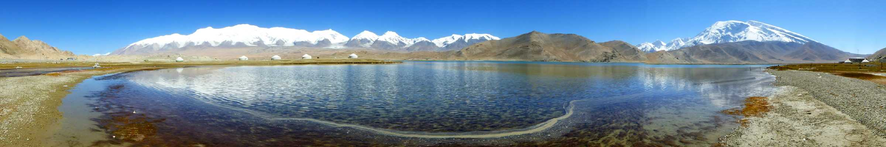
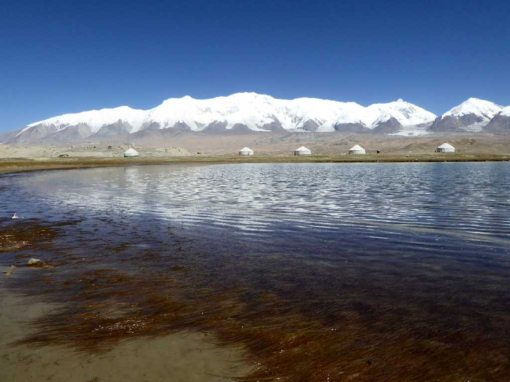
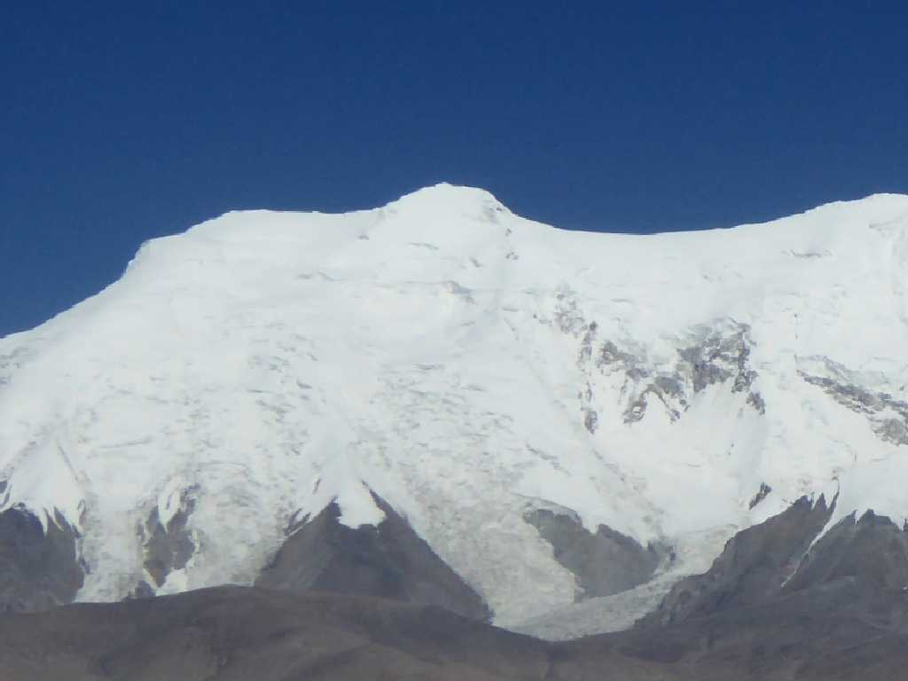
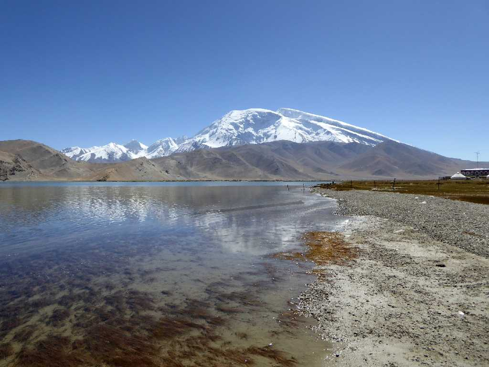
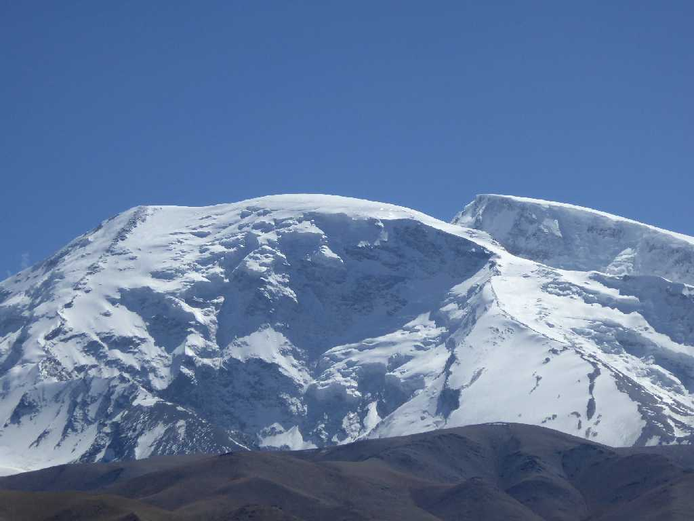
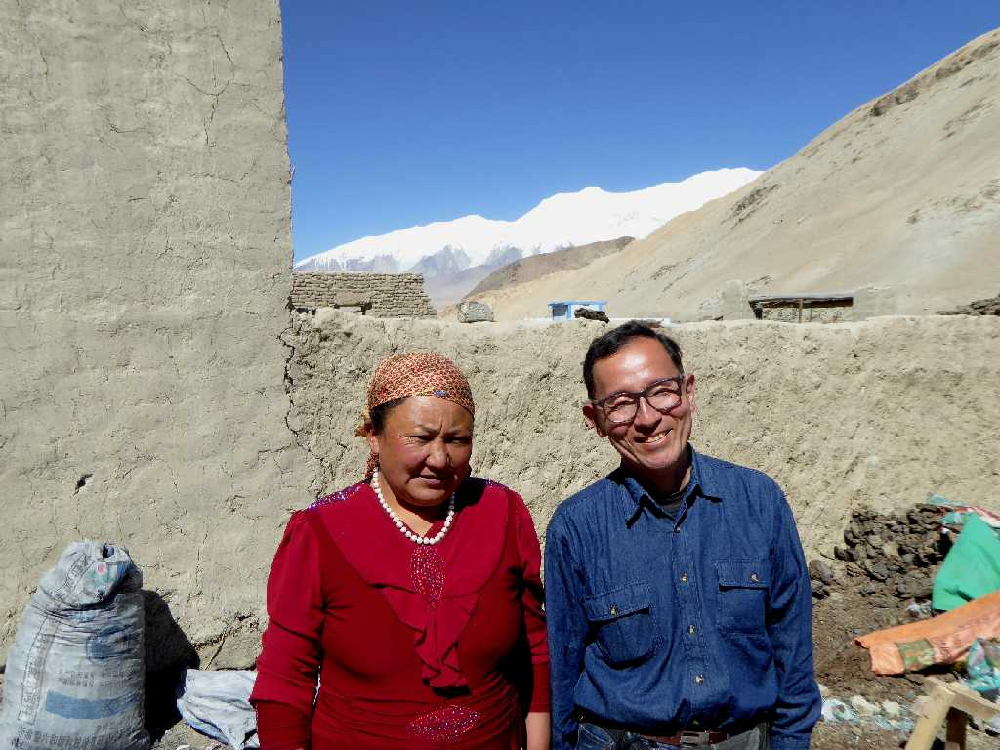

7,719m Kongur Tagh 7,546m Muztagh Ata 3,600m Lake Karakul Karakoram Highway Kyrgyz Xinjiang
新疆 吉爾吉斯 喀喇昆仑公路 喀拉庫勒湖 公格尔峰 慕士塔格峰
カシュガルからカラコルムハイウェイで中国の西の端の新彊ウィグル自治区キルギス自治州の美しいカラクリ湖に入る

7,719m Kongur Tagh 3,600m Lake Karakul 喀拉庫勒湖 公格尔峰
カラクリ湖より世界第２５位の高峰である７,７１９ｍのコングール峰を望む

7,719m Kongur Tagh Lake Karakul 喀拉庫勒湖 公格尔峰

7,546m Muztagh Ata 3,600m Lake Karakul 喀拉庫勒湖 慕士塔格峰
カラクリ湖より７,５４６ｍのムスターグ峰を望む

7,546m Muztagh Ata Lake Karakul 喀拉庫勒湖 慕士塔格峰

September 21 2015 7,719m Kongur Tagh 3,600m Lake Karakul 喀拉庫勒湖 公格尔峰
カラクリ湖の民家で家庭料理を戴く